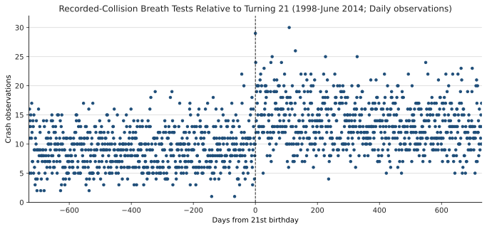
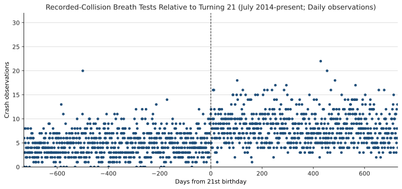
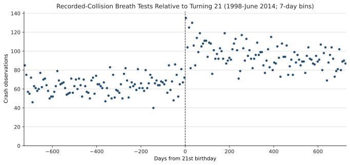
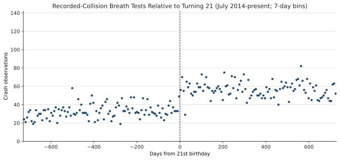
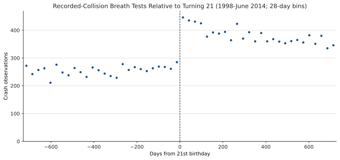
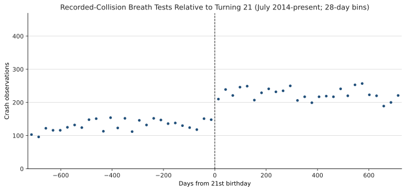

Recorded-Collision Breath Tests Relative to Age 21
Design
The outcome is the daily count of de-duplicated breath-test observations marked as involving a recorded collision. Each sample covers two years on either side of the tested person's 21st birthday. The first period ends in June 2014; the second begins in July 2014, when legal adult cannabis sales began in Washington.
The threshold estimates use a local Poisson count model within 90 days of age 21, with a post-21 indicator and separate linear trends on each side. The reported percentage jump is 100*(exp(beta)-1); standard errors use the robust delta method.
Age-21 Crash Jump
| Period | Percentage jump at 21 | Relative-day cells |
|---|---|---|
| 1998-June 2014 | +63.5% Robust SE 16.5; p=0.000 | 181 |
| July 2014-present | +34.4% Robust SE 18.6; p=0.032 | 181 |
Daily Counts


7-Day Bins


28-Day Bins

